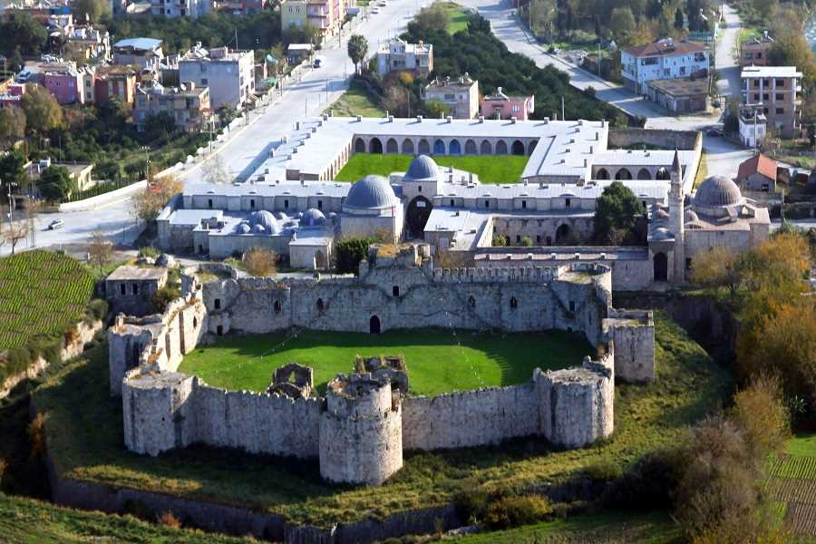

Payas,
Hatay ilinin bir ilçesidir. Akdeniz kıyısında İskenderun ve Dörtyol ilçeleri arasında yer almaktadır.
Tarihçe
Payas ilçesinde, yerleşim neredeyse insanlık tarihi kadar eskidir. Anadolu'yu Suriye ve Ortadoğu'ya bağlayan güzergâh üzerinde olması sebebiyle tarihin her döneminde Payas bölgesi stratejik bakımdan önemli bir yerleşim bölgesi oldu. Payas'ın eski çağlardaki adı Baias'tır. Sonraları Bayyas, Bayas ve son olarak da bugünkü hali olan Payas adını almıştır.
Zamanın en büyük iki devleti Bizans İmparatoru Herakleios ile İran Kralı II. Hüsrev zamanında 622'de yapılan büyük savaş Payas'ta olmuştur.
Daha sonraları Payas, bu sefer de Haçlı Seferleri yolu üzerinde olması sebebiyle önemini korumuştur. Haçlıların İlk seferlerinde Anadolu’dan Payas üzerinden çıktıkları bilinmektedir. Payas'taki Cin Kulesi’nin gözetleme amacıyla 13. yüzyılda yapıldığı tahmin edilmektedir. Bölge kısa bir süre Haçlı egemenliğinde kalmıştır.
Payas, Yavuz Sultan Selim'in Mısır seferi ile Osmanlıların eline geçmiştir. Hac yolu üzerinde olması nedeniyle Osmanlılar Payas’a önem vermişler ve Cenevizlilerden temel yıkıntıları ile kalan kaleyi tamamen sökerek aslına uygun olarak 1567-1571 tarihleri arasında bugünkü kale ve hendeği yapmışlardır. Külliye, cami, hamam ve imaret ise 1568-1574 yılları arasında tamamlanmıştır. Payas kalesi, kervansarayı ve limanı ile uzun bir dönem önemini korumuştur .
Osmanlı Devleti tüm doğu seferlerinde Payas Limanı'nı lojistik ikmal üssü olarak kullanmıştır. Son olarak IV. Murat ünlü Bağdat seferinde tüm lojistik ikmalini Payas üzerinden yapmıştır.
Evliya Çelebi seyahatnamesinde Payas'tan teferruatlı bir şekilde bahsetmektedir. Buna göre 17. yüzyılda Payas'ın nüfusu 8.000 civarındadır. Yine Evliya Çelebi'nin anlattıklarından o dönemde de turunç, üzüm ve incir bölgenin en dikkate değer ürünleri arasındadır. Evliya Çelebi yol üstündeki kervansaraylardan en önemlisi olarak Payas kervansarayını göstermiştir. Bu da Payas’ın 17. yüzyıldaki önemini göstermesi açısından dikkate değerdir.
I. Dünya Savaşı sonrasında kısa bir süre Fransız işgaline uğrayan Payas, işgalden fazla etkilenmemiştir. Her ne kadar 200 kişilik bir Fransız birliği ve atanmış bir Fransız kaymakamı bulunsa da bölgedeki çete faaliyetlerinin Payas'ın dağlarında ve özellikle Fındık Yaylası'nda üstlenmesi sonucu işgal hiçbir zaman etkili olmamıştır.
1939 yılında Hatay'ın anavatana katılımıyla sınır kenti olan Payas Hatay’a bağlanmıştır. 1970'li yıllara kadar bir tarım ve bahçecilik beldesi olan Payas, İskenderun Demir ve Çelik Fabrikası'nın kurulmasıyla bir anda büyümüş, 7.000'lerde olan nüfusu 25.000'lere kadar yükselmiştir. O günden bu yana istikrarlı bir şekilde büyüyen Payas, bugün sanayi ve ticarete dayalı ekonomisi, tarihi ve doğal güzellikleriyle Türkiye’nin önemli ilçelerinden birisidir. Payas, 12 Kasım 2012'de 6360 sayılı kanun ile Dörtyol'a bağlı bucak iken ilçe oldu.[5]
Kültür
Payas ilçesinde Türkmen kültür ve gelenekleri yaşanmaktadır.[kaynak belirtilmeli]
Tarihî yerler
Sokullu Mehmet Paşa Külliyesi
Sokullu Mehmet Paşa Kervansarayı İskenderun - Adana otoyolu üzerindeki Payas ilçesindedir. Kervansaray, hamam, medrese, cami ve bedesten gibi yapıları ihtiva eden bir külliye, 16.yüzyılda Sokullu Mehmet Paşa'nın emirleri üzerine Mimar Sinan tarafından yapılmıştır. En önemli yapı gruplarından birini teşkil eden Kervansaray' ın genişçe bir avlusu vardır. Avlunun etrafında ise yolcuların ve kervanların barınması için kubbeli odalar mevcuttur.
Cin Kulesi
Sokullu Mehmet Paşa Külliyesi ile deniz kıyısı arasında hakim bir tepe üzerinde inşa edilmiştir. Kulenin Cenevizliler ya da Haçlılar tarafından yaptırıldığı sanılmaktadır. Kale planlı, tamamen kesme taştan yapılan bu eser gözetleme kulesi olarak yapılmıştır.
Payas Kalesi

Aslen Haçlılar tarafından yaptırılan ve daha sonra da Osmanlılar tarafından restore edilen bu kale Payas'ın en dikkate değer sanat yapıtlarından birisidir. Sokullu Mehmet Paşa Külliyesinin güneyine düşmektedir. Sekiz kulesi mevcut olan bu kalenin etrafı düşman saldırılarından korunmak için savunma amaçlı büyük su hendeği ile çevrilmiştir.
Nüfus
2020 yılı nüfus sayımı sonuçlarına göre Payas'ın nüfusu 43.647'dir.
Coğrafya
Payas ilçesinin yüzölçümü 157 km²'dir.[9] Payas, Hatay il merkezine 83 kilometre uzaklıktadır. İlçe topraklarının kuzeyinde Dörtyol, doğusunda Amanos dağları, güneyinde İskenderun ve batısında Akdeniz bulunur. İlçenin rakımı 19 metredir. Payas ilçe merkezi Akdeniz kıyısında düz bir alanda kurulmuştur. İlçenin en önemli akarsuları Kozludere ve Payas çaylarıdır.[kaynak belirtilmeli]
Jeolojik yapı
Payas ilçe topraklarının ana çatısını Amanos Dağları ve Payas düzlüğü oluşturur. Bu dağ sırası ile ovanın jeolojik yapısını peridotit ve serpantin gabro gibi yeşil kütleler oluşturmaktadır.
Dağ ve tepeler
Payas ilçe topraklarının %90,5'ini ovalar %5,5'ini dağlar %0,4'ünü ise platolar oluşturur. İlçenin kuzey-güney hattında Amanos Dağları yer almaktadır. İskenderun - Payas ilçe sınırı arasındaki dağlık kesimde 1,643 metre yükseklikte Çağsak Tepe bulunmaktadır.[kaynak belirtilmeli]
İklim
Payas ilçesinde Akdeniz iklimi görülmektedir. Yazları sıcak ve kurak, kışları soğuk ve yağışlı geçmektedir.[10]
Bitki örtüsü
Payas ilçesinin doğal bitki örtüsünü makiler ve ormanlar oluşturur. Amanos Dağları'nda 800 metrenin altında Akdeniz Makisi üstünde çam ormanları bulunmaktadır.
Ekonomi
Payas ilçesinin ekonomisi, sanayi, tarım ve hayvancılığa dayalıdır. İlçe sanayi ve şehirleşme yönünden gelişmiştir. İskenderun Demir ve Çelik A.Ş. ve Payas Organize Sanayi Bölgesi ilçenin 2 büyük sanayi kuruluşudur. İlçede narenciye ağırlıklı olmak üzere zeytin, kayısı, hububat ve sebze yetiştiriciliği yapılmaktadır. Köylerde ve yaylarda besicilik yoluyla küçük baş ve büyük baş hayvancılık ile arıcılık yapılmaktadır. Ayrıca kıyı kesimlerinde küçük çapta balıkçılık'ta yapılmaktadır. İlçede; Payas İlçe Gıda, Tarım ve Hayvancılık Müdürlüğü[11], Payas Ziraat Odası ve T.C. Ziraat Bankası Payas Şubesi[12] tarafından çiftçilere tarım ve hayvancılık alanında destek verilmektedir. İlçede; esnaflara, kobilere ve kooperatiflere Halkbank Payas Şubesi[13] ve Türkiye İş Bankası Payas Şubesi[14] tarafından ön ödemeli faizsiz kredi desteği sağlanmaktadır.
Altyapı bilgileri
Payas ilçe merkezi ile tüm mahalle ve köylerinde; elektrik, su, telefon ve kanalizasyon şebekesi mevcuttur. İlçede; Payas Ptt Merkez Müdürlüğü,[15] Tedaş Payas İlçe İşletme Şefliği, Hatsu Payas İlçe İşletme Şefliği ve Payas Türk Telekom İşletme Şefliği bulunmaktadır.
Eğitim
2015 yılı verilerine göre İlçede; Payas Halk Eğitim Merkezi, 2 Anaokulu, 19 İlk ve Ortaokulu, 5 Lise Mesleki, Teknik Lisesi ve 2 Sürücü Kursu bulunmaktadır.[16]
Sağlık
Payas ilçesinde; 2015 yılında hizmete açılan 50 yataklı; Payas Devlet Hastanesi,[17] Payas Toplum Sağlığı Merkezi, Payas 8.Nolu 112 Acil Sağlık Hizmetleri İstasyonu, 1 Özel Poliklinik, 4 Aile Sağlığı Merkezi ve 2 Sağlık Evi ve 15 eczane bulunmaktadır.[18]
Ulaşım
Payas ilçe merkezinden bağlı mahalle ve köylere ulaşım otobüs, minibüs ve dolmuşlar vasıtasıyla sağlanmaktadır. İlçe merkezinden günün her saatinde bağlı mahalle ve köyler ile çevre ilçelerin belde ve köylerine otobüs, dolmuş ve minibüs bulmak mümkündür. Dörtyol - Payas ilçe yolu 10 km'dir.[19] Hatay - Payas otoyolu ise 83 km'dir.[20] Ayrıca İskenderun - Adana otobanı ve İskenderun - Toprakkale otoyolu Payas ilçesinin doğusunda geçmektedir. Adana'dan ayrılan tali demir yolu hattı da ilçenin içinden geçerek İskenderun'a ulaşmaktadır.
Asayiş ve güvenlik
Payas ilçesinin asayiş ve güvenliği, Payas İlçe Emniyet Müdürlüğü[21] ve Payas İlçe Jandarma Komutanlığı[22] birimleri tarafından sağlanmaktadır. İlçe Emniyet Müdürlüğü'ne bağlı Payas Polis Merkezi Amirliği ile Mobese Komuta Merkezi bulunmaktadır.
Yerel yönetim
Şu an Hakan Kılınçkaya Payas Kaymakamlığı görevini yürütmektedir. 2014 Türkiye yerel seçimleri sonucunda Bekir Altan Payas Belediye Başkanlığı görevini yürütmektedir.
İdari yapı
2012 yılında TBMM'de kabul edilen 6360 sayılı kanunla Payas ilçesi kurulmuştur.[23] Belde belediyeleri kapatılarak mahalleye dönüştürülmüştür. Payas 12 mahalleden oluşmaktadır.[24]
Belediye
Payas'ta belediye teşkilatı ilk kez 1942 yılında kurulmuştur. Yakacık (Payas) 1968 yılında bucak merkezi olurken, Payas belde belediyesi, 2014 yılında ise Payas ilçe belediyesi olmuştur.
217351015
Iskenderun Teknik Universitesi